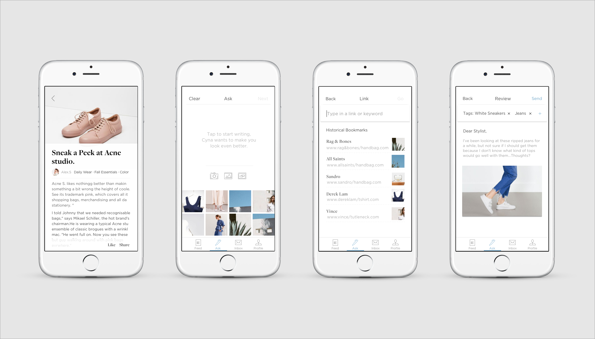
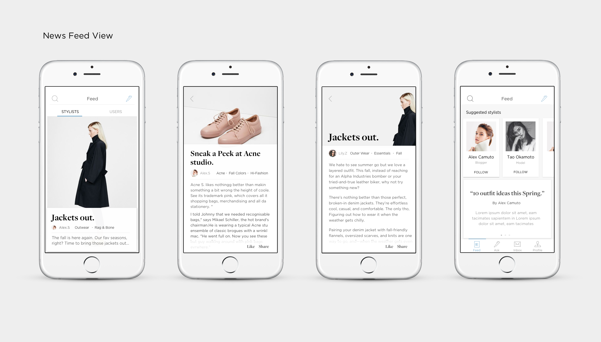
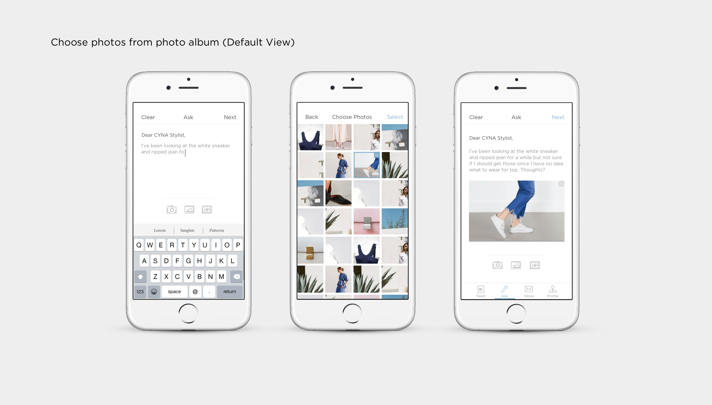
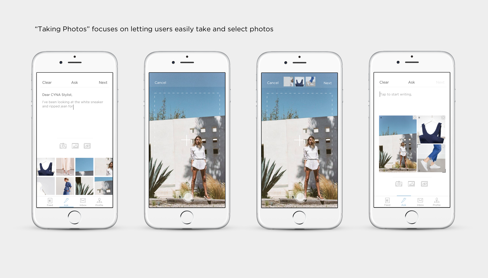

Spring 2015,
I built a fashion service IOS platform called CYNA and it was my first attempt at product design.
It's an IOS app that connects everyday users with fashion experts to get quick, personalized fashion/outfit related recommendations. It also provides a fashion platform that provides learning opportunity and sharing thoughts. After built for a year, I decided to redesign it because I thought it was a product with great potentials.
Painpoints:
"What do I wear today?""Is it appropriate for my first date?"
I have problems deciding between colors, especially while shopping by myself. Sometimes, I also spend way too long deciding what to wear. From chatting with my friends, I realized that I’m not the only person with these problems. From there, I saw the opportunity to create a service where ordinary users can be connected with fashion experts to bring more confidence and efficiency to their life.
after forming a team of 6 with a mix of engineers and designers, we conducted user research on people around us, and out of 53 responses got back, 86% of people(CMU!) expressed needs in fashion/outfit related advice. Through interviews, we learned "Professional, quick and direct" are people's main expectation for fashion advice and we categorized people's biggest fashion needs to 1. Shopping advice: should I get X? 2. Combination based on the clothes that I have 3. Outfit A or outfit B for a certain location. Most importantly, the millennials users who have needs on fashion adivce needs we are targeting at are extremely excited about the idea of being connected to some fashion stylists. Competitive analysis(See report) on other fashion platforms also told us that there’s no service that directly provides fashion advice to users from stylists and there is market space for our service to win.

So we built a super simple fashion service that has a flow similar to uber & snapchat.
The initial flow tunnels unsers into first taking a photo, following by typing questions, then send it out
Redesign after a year:
Idea with potential, but will people really trust CYNA as a service?
After a year of further study of User Experience from HCI, I relooked into CYNA and recognized CYNA wasn’t perfect at all. I still think CYNA was a great idea so I decided to redesign it. I also challenged my initial idea, why would people trust someone they don't know over their friends? This time, I dug deeper into user research, performed think-aloud testing and applied Nielsen's Heuristic evaluations on the working prototype of CYNA and found many problems!
Redesign:
Simplicity or Functionality?
Approach from different use case scenarios.
I categorized the problems during the redesign process and kept iterating use case scenarios of CYNA based on problems to help me ideate.
Scenario 1:
Amy is using CYNA for the first time. She is not super interested in fashion but sometimes has needs in fashion related advice. She didn't really have a particular question in mind yet so she just wanted to explore the App. How do we have Amy trust CYNA, and make sure she comes back again?
Scenario 2:
Sam has been using CYNA for a while and he loves fashion. However,the only way he could learn about fashion is through asking fashion expert questions. He hopes CYNA as a fashion platform could provide more learning opportunities about fashion as a fashion lover.
Scenario 3:
Anna is asking a question for the firs ttime, yet she only wanted to ask a question on rain boots recommendation and she doesn’t have any pictures to attach
Key Design Decision 1:
Instead of Q&A,
Let's focus on an enagaging community
Instead of Simple Q&A, I decided to build a fashion community on top of it. This option lets me expand my targeting users groups from solely millennials who have needs to fashion advice, to millennials who love fashion and would love to follow the trend. Second, it brings a lot more trust to the platforms to users know who the Stylists are, and most importantly, encourage users actively staying on the platform. Q&A will introduce people join CYNA, but the community experience will be why they stay.
Key Design Decision 2:
Give the process of question asking full flexibility
The new question asking flow I proposed is more like working on a canvas. It provides options including uploading pictures, take photos from camera, and drag photos from hyperlink at once so users have a lot more freedom to choose to arrange their questions according to needs.
 Challenge:
How to design a context awareness system?
A challenge that I thought was "how to design a context awareness system that gives user customized suggestions that actually work for them?" This concept is also as important as "how to make this App potentially work?". I also considered how to protect users' privacy issues through the amount of info they might have to give out.
1. Tagging your question to match with stylists with the corresponding expertise.
There are many types of fashion related questions, and not every stylist has the same skill sets. Based on the content of the question, CYNA will generate automatic tags that best describe the content of the question. Through choosing auto-generated tags or creating own tags, users are matched with stylists who are true experts in the area.
2. Two Steps onboarding experience
I conducted interviews with Stylists to really understand what kind of information is required from users to get a sense of who they are. From this information, I designed the onboarding flow. Through answering Quickly yes or no , CYNA learns about the users in the shortest amount of time. Step 2 onboarding experience is optional yet it's gonna reappear when users ask their first question. These questions are a lot more detailed!
3.Match Again: Build long term relationship
I want users to establish long term relationship with Stylists to build the trust and familiarity. Users have higher priorities with stylists that they have given high ratings before. Feedback system is also designed to notify users when they are being matched.
4.Message Response Style & Rating
Message style provides flexibility in conversation and follow-up questions, while rating experience helps CYNA find better Stylists next time. The messaging style can make it even easier for real development, a possible way is to integrate it into messenger or any existing chatting platform.
Business Model:
How does CYNA grow as a product?
Initially the business model is based on charging on user per advice. According to the user research, users were willing to pay for such service. In the second CYNA version, I decided to go with no charge on user’s side. A potentially business model will be through advertisement and Stylists will be paid based on their rating from answering questions.
Dig Deeper into User Experience
Q: How to make information filling experience less painful for users?
People hate filling in information. How to make the filling information process less painful was a challenging part. I decided to separate the information gathering process to two steps. The first step is when users sign up and choose styles they like through swiping pictures. From the first stage, we have a general sense of what styles users like and don't like. Based on this preference, users are then led to the news feed, and from there Cyna can learn more about users through their booking marking, liking contents & Stylists following activities. The second step of information gathering would happen before users ask a question. This step consists choosing style tags, choose body type & Color of the closet. All these procedures are designed with simple tapping & fun interactions to make users less painful in what they do.
Q: When will users fill User information?
Users will be notified to fill pre-ask information after they sign up. However, they are given the option to skip this step. Users will be asked to fill the information again when they start proposing the questions, and a card will pop up to inform users that the purpose of this information is to help CYNA give them more accurate feedback.
Q: Hamburger icon versus dock?
In the new CYNA version, I replaced the hamburger icon with the bottom bar that lays out all the features. It was a hard decision because I had to choose between minimalistic UI design versus quicker user access. In the end, I chose all feature layout to create a more convenient user experience.
Q: How to make the process easier for users when taking multiple photos?
Pictures taken will appear on the top of the screen for easy editing while the camera automatically continues for multiple photo taking!
Q: When should users rate stylists?
Both users and stylists are given the authority to end the conversation. After a conversation ends, users can rate the stylists right away or choose to rate later. If users choose to rate later, then the rating page would appear again
Regroup, Reflect & Next Steps:
Take all stakeholders equally into consideration!
I conducted a couple more informal user testing with the prototype I created using Principle and received very positive responses. I also sent out a smoke test to the public that reached 2K+ audience with 247 clicks and 12 sign-ups. Currently, I'm in the process of Stylist's version of the App.
Looking back to the way I approached this project, I recognized that though I spent a lot of time understanding and designing for the users, I didn’t give as much attention on designing for the stylists.
CYNA was a great project for me to practice my UX thinkings; I tried hard to make best decisions based on the information I had. However, I wasn’t able to treat the stakeholders equally important in my design research process; I definitely didn’t hear enough voice from my stylists than I should have. And that is something I marked as an "extremely important" in the journey of becoming a product designer.